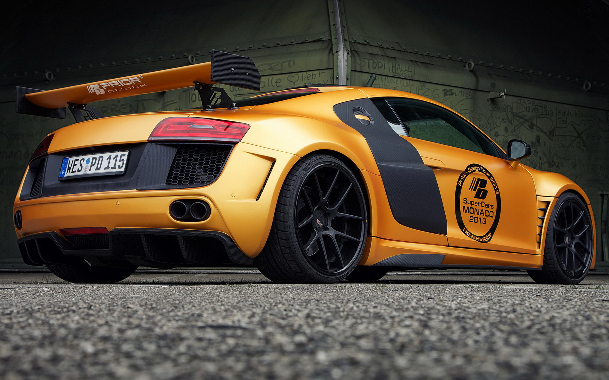

介绍
唯王者承袭荣耀
 承袭了源于赛道的顶尖科技，奥迪R8 V10 Coupé Performance拥有引人注目的赛车外观，并时刻透露着勇敢无畏的气息。
其空气动力学车身设计灵感，来自富有传奇色彩的奥迪R18车型，驰聘间运动基因尽显无疑。
承袭了源于赛道的顶尖科技，奥迪R8 V10 Coupé Performance拥有引人注目的赛车外观，并时刻透露着勇敢无畏的气息。
其空气动力学车身设计灵感，来自富有传奇色彩的奥迪R18车型，驰聘间运动基因尽显无疑。
 新款奥迪R8将配备米其林Pilot Sport Cup 2. 奥迪R8（Audi R8）是一款中置引擎双座跑车， 由德国汽车制造商奥迪于2006年推出，极速达316km/h。奥迪R8是奥迪量产的首款中置引擎超级跑车， 基于兰博基尼Gallardo的开发平台，融合了奥迪在多个运动赛事中取胜的经验，技术以及突破传统观念的完美设计。 强劲的V8和V10发动机、全时四轮驱动系统和奥迪全铝车身空间框架结构，赋予了奥迪R8出众的动力性能， 以及在赛道和公路上的卓越表现。
Honour
奥迪R8拥有无比迷人的驾控感，在奥迪品牌的运动车型中堪称翘楚， 中置420马力V8FSI发动机、全时四轮驱动系统和奥迪全铝车身空间框架结构， 赋予了它无比出众的超凡动力表现。奥迪R8于2006年9月28日起接受预定， 首批产品于2007年上半年交付。作为奥迪旗下的首款中置发动机运动车型， 奥迪R8将奥迪在无数场汽车运动赛事中取胜的经验、突破传统的设计以及领先科技完美地融合在一起， 并使奥迪“突破科技，启迪未来”的品牌理念成为其在赛道和公路上出色表现的最佳注解。
奥迪在全世界的汽车运动赛场上获得了无数场胜利。继20世纪80年代奥迪摘得汽车拉力赛、房车赛桂冠后， 长距离汽车耐力赛无疑成为迄今奥迪赛车工程师们面临的最大挑战。奥迪同样成功地征服了这一挑战： 奥迪R8赛车五次赢得享有极高声望的勒芒24小时耐力赛，具体时间为2000年到2002年， 以及2004年和2005年。其中两次占据比赛的前三甲。勒芒赛无疑是奥迪赛车部工程师们面临的最严峻的挑战， 因为它所要求的工程学水平要远远超过仅仅将所有系统只保持短时间的超高性能。除了必要的顶级性能和优异的驱动力外， 长距离汽车赛的关键在于持久力和可靠性，以及最适宜的人类环境学设计。这些赛车基因被巧妙地移植到公路型运动车上， 再配以激动人心的设计，奥迪R8绝对独树一帜、引人注目。
外观设计
LED激光大灯
奥迪R8 V10 Coupé Performance作为顶级的超跑车型，标配了奥迪LED激光大灯， 这也是整个奥迪产品系列中首次应用的最新灯光科技。当时速到达60km/h时， 四束高功率激光二极管将切换至激光大灯模式，并提供更强有力的照明射程， 确保您与他人在行车过程中时刻相互可见。此外，远近光调节、激光大灯， 日间行车灯及动态转向灯均完美融合了最新的LED科技。
动感锐利的车身线条
承袭了源于赛道的顶尖科技，奥迪R8 V10 Coupé Performance创新的外观设计再一次撼动目光， 细微之处无不彰显出浓烈的赛道之美。其肩线及明显的阴影边缘， 突显了跑车勇往直前的运动特征和精湛工艺的科技杰作。
后尾灯，彰显浑然一体的精湛工艺
奥迪R8 V10 Coupé Performance配备的后尾灯带有动态转向灯， 呼应的尾部设计展现出一致的整体感观印象。 从汽车的后部视角看，后尾灯的设计采用整体融合式， 与后部空气进气口交相呼应，彰显出浑然一体的精湛工艺。

动力
7-速双离合变速箱
奥迪R8 V10 Coupé Performance搭载的7-速双离合变速箱， 可在分秒间完成换档变换，几乎不会有任何动力损失 。 当转换到“D”档位并搭配奥迪驾驶模式选项的舒适模式，自由车轮转动模式启动， 可有效地降低油耗；当加速踏板松开或制动时，离合器打开，离合器盘保持自由转动。
quattro®全时四轮驱动系统
奥迪R8 V10 Coupé Performance搭配的全新quattro®全时四轮驱动系统， 在performance模式下，可选择干燥、湿滑、雨雪路面，因此， 力矩分配不只因关联驾况改变，而是同预选摩擦驾况相匹配。 高摩擦力的路面，可达到典型后驱驾驶特性，而冰雪路况则可以达到最大的牵引力， 这一切都是典型的quattro®全时四轮驱动系统带来的无可比拟的优势。
驱动系统
类似于涡轮增压式发动机的最高转速范围，出色的峰值扭矩，伴随美妙的轰鸣声——这些都是一台完美的赛车发动机应有的特性。优质的发动机不仅应具有澎湃的动力潜能，并且适宜日常驾驶。在高速420马力8缸发动机中，FSI汽油直喷技术的进化达到了一个新的高度。该项技术在奥迪R8赛车中的应用使其多次取得成功。这些数据显示了8缸发动机杰出的潜能。4.2升发动机在7,800转/分时输出功率309千瓦（420马力）。在4,500转/分～6,000转/分时的峰值扭矩为430牛·米。在3,500转/分～7,600转/分范围内，发动机能持续稳定输出不低于峰值扭矩90%的动力。基于这些品质，在任何实际行驶条件下8缸发动机都能提供最澎湃的动力。其性能参数同样令人印象深刻：奥迪R8只需4.6秒即可从静止加速到100 公里/小时，最高时速为301 公里/小时。发动机是一个高转速单元。最大发动机转速为8,250转/分。这一原理的优势在于发动机能在高转速下输出高功率，在整个转速范围内保持平稳、灵敏的响应。除此以外，其灵敏度、活力以及类似赛车发动机的轰鸣声都是这款车型的得意之处。 奥迪R8另一项直接来自赛车运动的技术是干油池润滑。它为最大纵向、横向加速度提供了理想基础，使V8发动机能安装在更低的位置，从而降低了车辆重心，进一步加强了行驶动力性。本车型可提供两款变速器：手动6速变速器及奥迪R tronic无级变速器。赛车运动的影响再次在这里显露无疑：除中控台上的换档手柄外，还在在方向盘后安装有换档拨片，后者体现了人体工程学的特色在赛车运动中的成功应用，给驾驶者提供赛车般的驾驶感受。手动换档拨片的最成功的应用是5次夺得勒芒赛事冠军的奥迪R8，一辆可以让驾驶员在方向盘上换档的车型。线控换档技术结合紧凑的变速器，提供快速的档位切换和出众的比功率。“运动”档模式以快速换档提供最高的驾驶乐趣。当然，驾驶者也可以选择自动档模式。动力如此强劲的奥迪当然也配备了全时四轮驱动系统，通过粘性离合器将动力分配到前后轴。在奥迪R8上，具有传奇色彩的quattro系统根据发动机中置汽车的轴荷分布进行了调整。
安全
后部可视的驻车辅助系统，智能科技轻松驾驭
奥迪R8 V10 Coupé Performance配备的带倒车影像的奥迪驻车辅助系统，可通过MMI®屏幕显示车辆前、后方的影像，提供车辆附近整体视角，让车身周围的一切画面近在眼前。此外，也可显示计算好的行驶路线，包括辅助线和引导线并显示有利的转折点，时刻为您排除停车烦恼。
奥迪车身框架结构ASF®，运动基因尽显无疑
奥迪车身框架结构ASF®在奥迪R8 V10 Coupé Performance上进一步提升，其部分材料首次应用碳纤维。不仅如此，高强度的铝合金结构因更高的刚度和更低的重量优势明显，独立承载的截面及空心铸造结构可减少车身重量，使其车身重量仅为202Kg，相比上一代车型减重4Kg，并大大提高了40%的刚度。